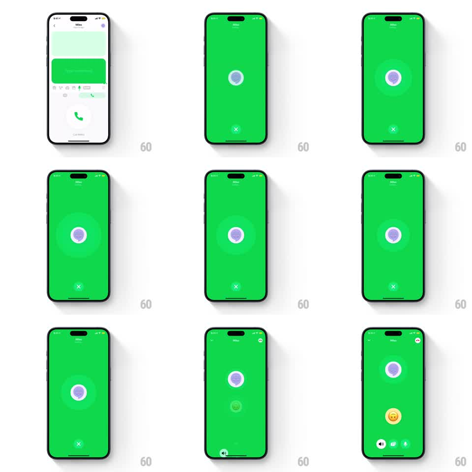

Media
Frame-by-frame

Rebuild this animation 1:1: Honk's call connect - the green chat flips to a full-screen green call screen where the caller's avatar pulses with expanding rings, and on connect the controls and the second avatar spring in.

Rebuild this animation 1:1: Honk's call connect - the green chat flips to a full-screen green call screen where the caller's avatar pulses with expanding rings, and on connect the controls and the second avatar spring in.
## Integration
Integration: stack-agnostic spec - springs given as stiffness/damping, timed motions as duration + curve; map every value to your framework and animation library of choice.
## Scene
Full-bleed bright green call screen ("Miles" header). Center: the contact's avatar (masked face illustration) inside a white ring, radiating concentric pulse rings. Bottom: red X end-call button while ringing; after connect, a second avatar pops in below the first and call controls (speaker, video, mute) slide into the bottom row.
## Motion spec
Pattern: continuous radar pulse with staged connect entrance.
- Transition: the green washes over the chat screen from the message area outward (radial reveal, 350ms); the avatar scales up from the chat bubble's position (spring ~300/20, 400ms).
- Ringing: pulse rings expand from the avatar (scale 1 -> 2.6, opacity 0.5 -> 0, 1.6s each, 530ms stagger between three rings, looping); the red X bobs subtly (translateY +-2pt, 2s sine).
- Connect: the pulse rings stop and collapse (scale -> 0.9 fade, 200ms); the avatar gets a solid white ring (stroke draws, 250ms); the second avatar springs in below (scale 0 -> 1.15 -> 1, spring ~340/14); the control buttons slide up into the bottom row (translateY 30pt -> 0, opacity, 300ms, 60ms stagger).
- The X swaps out as the controls arrive (crossfade, 200ms).
## Calibration
- Ringing pulses originate exactly at the avatar's edge, never from screen center.
- The green is the app's saturated brand green, full-bleed including status bar.
## Reduced motion
No pulse rings; connect uses fades (250ms).
## Don't miss
- The second avatar is smaller and sits below the first - a stacked pair, not side by side.
- The header name/status text stays visible through the whole sequence.